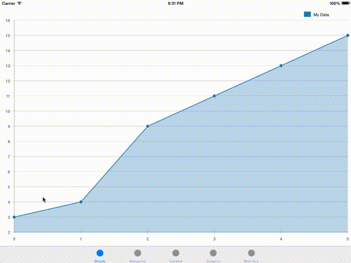
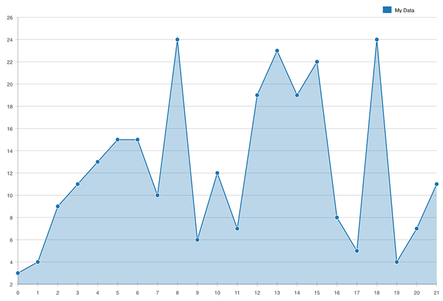
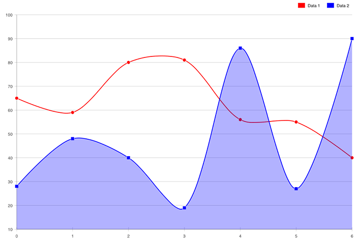
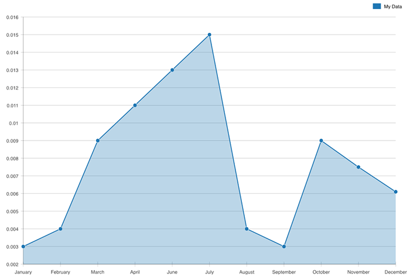
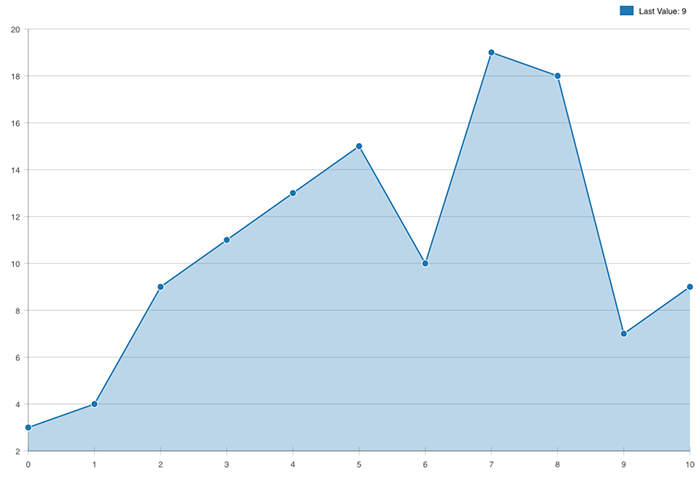

SwiftCharts is a lightweight "library" for Line Charts (and more in the future!).
Installation
- Download just the LineChart.swift file, or download the example project (which includes various examples for both Mac and iOS).
- Drag LineChart.swift into your Xcode project
Usage
- LineChart (CALayer subclass): You can create a LineChart object and assign it as a layer to a view (advanced usage).
- LineChartView (UIView/NSView subclass): LineChartView is a simple view that initializes and hosts a LineChart object as it's layer. It also provides some nice features like auto-resizing the LineChart layer when needed and providing tooltips (recommended usage).
Documentation
Check out the SwiftCharts wiki on github!
Examples
Simple Example
let view = LineChartView()
view.lineChart.datasets = [ LineChart.Dataset([3.0, 4.0, 9.0, 11.0, 15.0, 13.0]) ]

Advanced Example
Each line can be completely customized (fill color, stroke color, point shape/color/stroke, bezier curves, etc)
let view = LineChartView()
let data1: [CGFloat] = [65.0, 59.0, 80.0, 81.0, 56.0, 55.0, 40.0]
let dataset1 = LineChart.Dataset(data1, label: "Data 1")
dataset1.color = NSColor.redColor().CGColor
dataset1.fillColor = nil
dataset1.curve = .Bezier(0.3)
let data2: [CGFloat] = [28.0, 48.0, 40.0, 19.0, 86.0, 27.0, 90.0]
let dataset2 = LineChart.Dataset(data2, label: "Data 2")
dataset2.color = NSColor.blueColor().CGColor
dataset2.curve = .Bezier(0.3)
lineChart.datasets = [ dataset1, dataset2 ]

Labeled Example
Custom labels can be added for the x-axis
let view = LineChartView()
lineChart.xAxis.labels = ["January", "February", "March", "April", "June", "July", "August", "September", "October", "November", "December"]
var data: [CGFloat] = [0.003, 0.004, 0.009, 0.011, 0.013, 0.015, 0.004, 0.003, 0.009, 0.0075, 0.0061]
lineChart.datasets = [ LineChart.Dataset(data, label: "My Data") ]

Dynamic Example
LineChart automatically detects updated values and animates the graph accordingly.
let view = LineChartView()
let line = LineChart.Dataset([3.0, 4.0, 9.0, 11.0, 13.0, 15.0])
view.lineChart.datasets = [ line ]
// below could happen at any point
let newRandomValue = arc4random() % 25
line.data += [ CGFloat(newRandomValue) ]

Multi-Axis Example
You can assign datasets to different axes, each with their own scale
let view = LineChartView()
var data1: [CGFloat] = [3.0, 4.0, 9.0, 11.0, 13.0, 15.0]
lineChart.datasets += [ LineChart.Dataset(data1, label: "One") ]
var axis2 = LineChart.Axis(alignment: .Right)
var data2: [CGFloat] = [504040.0, 201050.0, 303001.0, 130049.0, 170021.0, 202003.0]
lineChart.datasets += [ LineChart.Dataset(data2, label: "Two", yAxis: axis2) ]
var axis3 = LineChart.Axis(alignment: .Right)
var data3: [CGFloat] = [0.0021, 0.0056, 0.001, 0.003, 0.005, 0.002];
lineChart.datasets += [ LineChart.Dataset(data3, label: "Three", yAxis: axis3) ]